第 1 页 · 本章介绍Python平台下另一最常用的绘图库Seaborn，在官网https://seaborn.pydata.org/
本章介绍Python平台下另一最常用的绘图库Seaborn，在官网https://seaborn.pydata.org/上注明了Seaborn的目标就是实现统计数据可视化(statistical data visualization)。该库提供了更精美的绘图效果和更方便快捷的数据可视化方法，目前最新版本是0.13.2(2024年07月)。新版和旧版在某些参数名上有变动，读者学习本章时请升级到较新的版本(pip install seaborn==0.12.2)。其0.9版本的中文文档网址为 https://seaborn.apachecn.org。
本章代码在0.12.2版下测试通过，各代码段首部默认包含下述语句。为节省版面，后续代码段不再列出。
第1节 Seaborn简介
import numpy as np
import pandas as pd
import matplotlib.pyplot as plt
import seaborn as sns # 引入seaborn, 按惯例命名为sns
plt.rcParams['font.sans-serif '] = 'SimHei' # 设置中文字体
plt.rcParams['axes.unicode_minus'] = False # 设置负号显示正常
sns.__version__ # 0.12.2, 查看seaborn版本
第 2 页 · 一、Seaborn绘图特点
一、Seaborn绘图特点
Seaborn建立在Matplotlib基础之上，用很少的代码就可以实现精美的绘图效果，其改进主要体现在以下方面：
1. Seaborn对原Matplotlib的很多方法和参数进行了包装，调用更加方便，并对图形进行了符合现代绘图风格的美化修饰。
2. Seaborn绘图时可设置语义元素(hue)，将不同类别的数据自动用多子图、不同颜色、不同符号进行区分，不需要额外编写代码控制。
3. Seaborn可以对数据自动汇总计算并利用结果作图。例如对统计数据自动分类、求均值、计数，极大减少了用户的编码量。
4. Seaborn和Pandas的DataFrame对象紧密集成，只需指定列名即可绘图。Seaborn的函数接口高度统一，可以由数个高级函数仅通过变动kind图形类型参数来调用低一级的绘图函数，诸如散点图、条形图、箱线图等都可以用同一条绘图命令设置不同的kind参数完成。
注意：Seaborn不是用于取代matplotlib，很多绘图细节仍需借助plt进行设置，两者配合工作。Seaborn用于快速成图，plt用于设置图形细节。Seaborn的API参考链接:https://seaborn.pydata.org/api.html#categorical-api 。
第 3 页 · 下面以titanic (泰坦尼克)数据集为例初步展示Seaborn绘图效果。Seaborn包含了若干示例数据，详见htt
下面以titanic (泰坦尼克)数据集为例初步展示Seaborn绘图效果。Seaborn包含了若干示例数据，详见https://github.com/mwaskom/seaborn-data，示例数据在使用时可实时下载。如因网络原因无法下载，可将本书资源中的seaborndata.rar内的所有.csv文件解压至某目录，在使用sns.load_dataset()读数据时指定该目录即可。本章主要使用其中的titanic、tips、iris和anscombe等数据集演示。
本节代码见资源包 "07.1.ipynb"文件。绘制客舱平均生还率对比图如下：
import seaborn as sns
# 设置绘图主题为ticks (白色背景、无网格线、有刻度线)
sns.set_style('ticks')
# 从seaborndata子目录读取titanic文件，返回DataFrame数据框
tit = sns.load_dataset('titanic', data_home='./seaborndata')
sns.catplot(x='pclass', y='survived', kind='bar', data=tit) # 右图
二、绘图示例
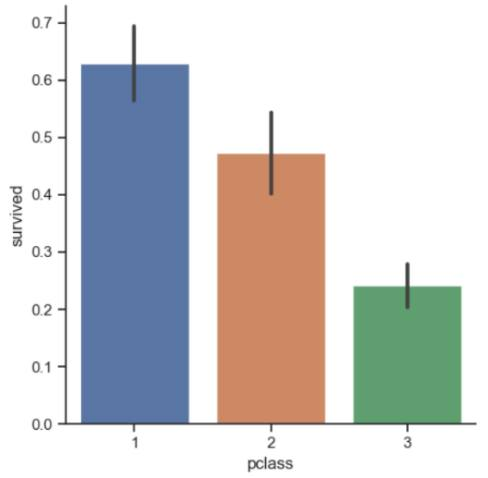
说明: (1)survived生还列，0未生还，1生还； pclass客舱等级列，有1、2、3三个等级。seaborn自动按x列分组，对每组的y列求均值。相当于y列先求所有1的和，再除以数据总条数得到平均生还率。1类舱旅客生还率最高。(2)柱状图上的小黑条是误差棒，表示数据的置信区间。
(3) tit = pd.read_csv('./seaborndata/titanic.csv') # 用pd读数据亦可
第 4 页 · 上图只使用了一条catplot命令就完成了按客舱分类、均值计算和绘图的功能，由此可见Seaborn的高效。
上图只使用了一条catplot命令就完成了按客舱分类、均值计算和绘图的功能，由此可见Seaborn的高效。
上面的命令在统计时没有区分性别，如果想按性别分类统计，可在命令中增加 hue='sex' 参数。hue在Seaborn中被称为语义，可视为类别区分，不同语义的数据自动用不同颜色表示，这样可将每类客舱中的男性和女性分开求平均生还率。ci=None表示不绘制误差条。下图可见女性生还率远高于男性。
sns.catplot(x='pclass', y='survived', kind='bar', hue='sex', ci=None, data=tit) # 左图，注意hue
二、绘图示例
改变kind参数可绘制不同类型的图形。绘制各类客舱旅客的年龄箱线图如下：
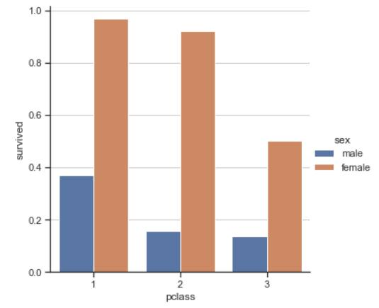
sns.catplot(x='pclass', y='age', kind='box', col='sex', data=tit) # 右图, kind='box'箱线图，col参数(分列子图)
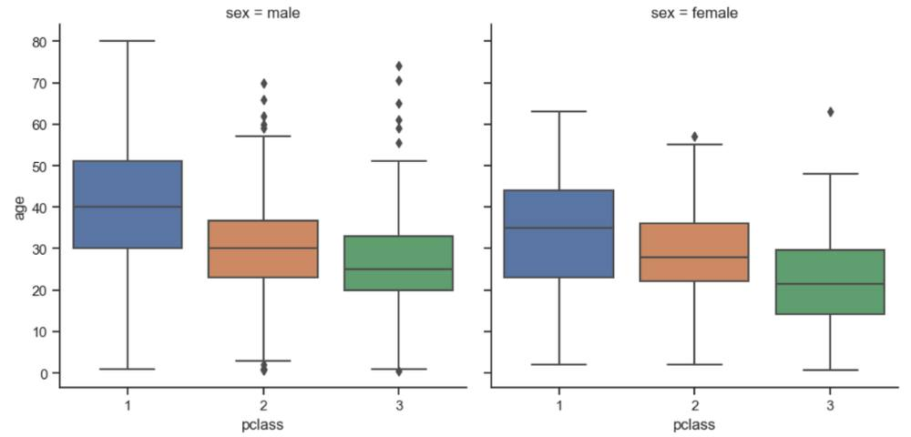
第 5 页 · 如果kind='strip' (此为默认值)则绘制散点图，见左下图。绘制时每类客舱有很多旅客，Seaborn将旅客的年龄
如果kind='strip' (此为默认值)则绘制散点图，见左下图。绘制时每类客舱有很多旅客，Seaborn将旅客的年龄值分散显示，各散点尽量不相互覆盖，以便观察点的分布。与之相对，如果用plt命令画年龄散点图，可以看到很多点是聚集在一起的，无法分辨，见右下图。
sns.catplot(x='pclass', y='age', data=tit) # 年龄散点图，左图，不设kind时默认为kind='strip'型散点
plt.figure() # 创建新画布
plt.scatter(x=tit.pclass, y=tit.age) # 右图，用plt命令绘散点图会重叠覆盖
二、绘图示例
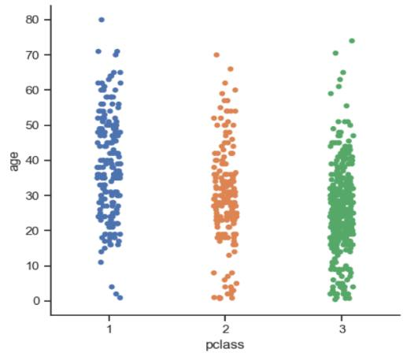
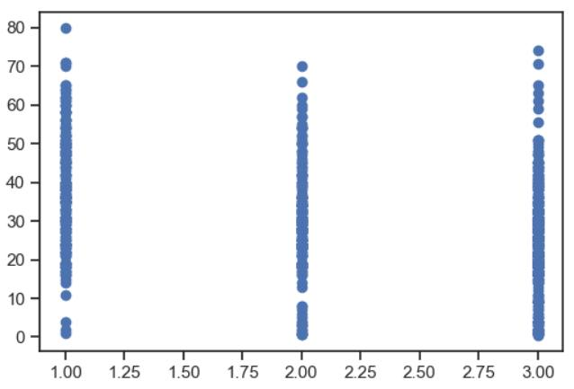
第 6 页 · 主题是预定义的样式集合。Seaborn有五个预设主题：darkgrid、whitegrid、dark、white和 ti
主题是预定义的样式集合。Seaborn有五个预设主题：darkgrid、whitegrid、dark、white和 ticks。 darkgrid是默认主题，灰色背景带网格线。whitegrid白色背景带网格线，dark和white主题则无网格线。ticks主题是白色背景无网格线，但显示刻度标记。主题可用 sns.set(style='样式名') 或 sns.set_style('样式名') 切换。
sns.set_style('darkgrid') # darkgrid主题。该主题是默认主题，因此可简写为 sns.set()
三、主题样式
切换主题时会覆盖Matplotlib的参数，设置后sns和plt的绘图命令都会受主题影响。设主题时字体会改为英文字体，导致中文显示错误。因此设置后，应再执行plt.rcParams['font.sans-serif'] = 'SimHei'语句重设中文字体。
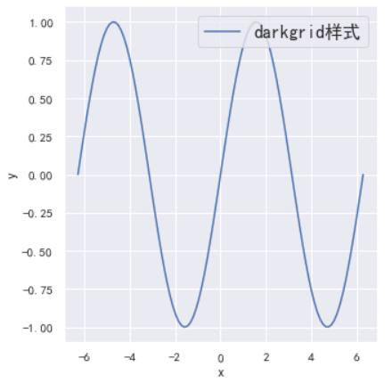
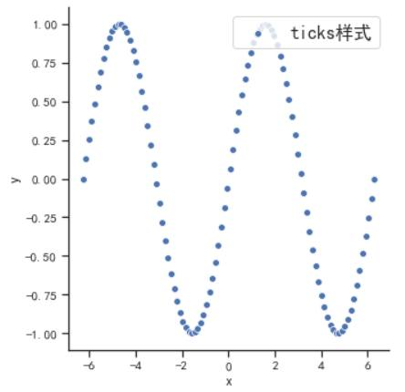
sns.set_style('ticks', { 'font.sans-serif': 'Simhei'}) # 或在设置主题时同时设置中文字体
第 7 页 · 绘图命令执行后会自动设置坐标轴标签、图例和轴线。如需直接控制图形的四边轴线是否显示可使用sns.despine()命令，
绘图命令执行后会自动设置坐标轴标签、图例和轴线。如需直接控制图形的四边轴线是否显示可使用sns.despine()命令，该命令应在绘图命令之后执行，默认将屏蔽顶部和右侧轴线，只显示底部和左侧轴线。
x = np.linspace(-2*np.pi, 2*np.pi, 100)
df = pd.DataFrame({'x': x, 'y': np.sin(x)}) # 创建绘图所需的DataFrame对象
sns.set_style('white')
sns.relplot(x='x', y='y', data=df, kind='scatter')
sns.despine(left=True, bottom=True) # 所有轴线都不显示，True:屏蔽, False:显示，左图
sns.despine(top=False, bottom=False, left=False, right=False) # 显示所有轴线， 右图
三、主题样式
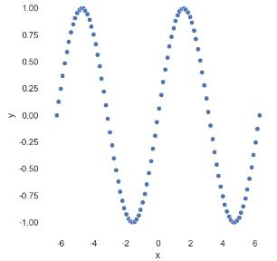
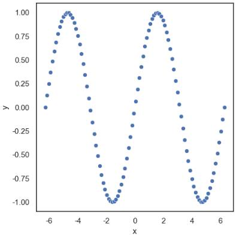
第 8 页 · 数据中包含很多类别(category)数据，例如性别、职称、质量等级等。在可视化时，通常需要按类别分类绘制对比图形，Se
数据中包含很多类别(category)数据，例如性别、职称、质量等级等。在可视化时，通常需要按类别分类绘制对比图形，Seaborn绘制分类数据主要使用catplot()命令。本节代码见 "07.2.ipynb"文件。
第2节 可视化分类数据
catplot()是一条高级命令，通过指定x或y参数为一个列名实现自动分类。常用参数如下表所示。
一、catplot()命令总览
| 参数名 | 描 述 | 参数名 | 描 述 |
| x/y | x或y轴数据列名 | row/col | 分行/分列子图(字符串列名) |
| hue | 语义列(字符串) | col_wrap | 每行最大子图数(整数) |
| data | 数据源(DataFrame对象) | ci | None: 不绘制误差条 |
| order | 字符串列表，规定X轴的分类数据顺序 | kind | 图形类型(字符串) |
| height | 子图高度(英寸) | aspect | 子图的宽度/高度之比(浮点数) |
| orient | 方向('v':垂直, 'h':水平) | palette | 调色板 |
| legend | True显示图例, False不显示 | legend_out | 默认True: 图例显示在外侧 |
| hue_order | 字符串列表，规定语义类别的顺序 | col_order | 字符串列表，规定按列生成子图的顺序 |
第 9 页 · seaborn绘图命令主要分为figure-level图级和axes-level轴级两类。图级命令通过设定kind参数调
seaborn绘图命令主要分为figure-level图级和axes-level轴级两类。图级命令通过设定kind参数调用低级的轴级命令完成实际绘图。下面两条命令完成的绘图效果基本相同，实际上就是catplot()图级命令通过kind='bar'的参数调用了低一级的barplot()轴级命令完成条形图绘制。
一、catplot()命令总览
sns.catplot(x='pclass', y='survived', hue='sex', kind='bar', ci=None, data=tit) # figure-level，图级
sns.barplot(x='pclass', y='survived', hue='sex', ci=None, data=tit) # axes-level，轴级
sns.catplot(x='列名', y='列名', hue='语义列', col='列名', kind='图形类型', data=df ) 可设定的kind:
kind='strip': 默认参数，strip型散点图，调用sns.stripplot()完成
kind='swarm': swarm型散点图，调用sns.swarmplot()完成
kind='box': 箱线图，调用sns.boxplot()完成
kind='boxen': 增强型箱线图，调用sns.boxenplot()完成
kind='violin': 小提琴图，调用sns.violinplot()完成
kind='point': 点图，调用sns.pointplot()完成
kind='bar': 条形图，调用sns.barplot()完成
kind='count': 条形计数图，调用sns.countplot()完成
第 10 页 · 要注意的是catplot()图级命令含有data参数(DataFrame类型)，x和y参数是列名字符串。图级命令支持ki
要注意的是catplot()图级命令含有data参数(DataFrame类型)，x和y参数是列名字符串。图级命令支持kind(图形类型)、col(分列子图)、row(分行子图)、height(子图高度)和aspect(子图宽度高度之比)等参数，图级命令可产生多子图。对比下面两条命令。
一、catplot()命令总览
g = sns.catplot(x='pclass', y='age', kind='box', data=tit) # 正确
g = sns.catplot(x=tit.pclass, y=tit.age, kind='box', data=tit) # 错误，x/y参数类型错误，必须是字符串列名
轴级命令(如stripplot()、boxplot()等)中的x和y参数可以是DataFrame数据框的字符串列名，也可以是列表或numpy数组，data参数不是必须的，支持hue参数，但不支持kind、col、row、height和aspect等和子图有关的参数，轴级命令返回的ax对象就是plt中的Axes类型。对比下面三条命令。
ax = sns.boxplot(x=tit.pclass, y=tit.age) # 正确，x/y参数可以是Series。返回对象为Axes
sns.boxplot(x='pclass', y='age', data=tit) # 正确，x/y参数为字符串列名或数组均可
sns.boxplot(x='pclass', y='age', col='sex', kind='box', data=tit) # 错误, 轴级命令不支持col和kind参数
图级命令执行后的返回对象g的类型是axisgrid.FacetGrid ，此类对象可包含若干图形单元格，是由多个子图构成的一种组合图形对象。g.fig属性得到的就是Matplotlib中的Figure对象，如有需要，可引用g.fig并利用plt命令进一步修饰图形。
第 11 页 · 初步观察数据时最常使用散点图。分类散点图主要呈现某个类别中数据的聚集情况。下面以sns中最常用的tips小费数据集为例演
初步观察数据时最常使用散点图。分类散点图主要呈现某个类别中数据的聚集情况。下面以sns中最常用的tips小费数据集为例演示分类散点图。
sns.catplot(x="day", y="total_bill", data=tips) # 右图, 默认 kind='strip'
二、分类散点图
tips = sns.load_dataset('tips', data_home='./seaborndata') # 加载tips数据集
tips.sample(2) # 随机抽取2条数据
Out:
total_bill tip sex smoker day time size
106 20.49 4.06 Male Yes Sat Dinner 2
125 29.80 4.20 Female No Thur Lunch 6
数据集tips共7列，3个数值列和4个类别列，依次为total_bill(账单金额)、tip(小费)、sex(性别)、smoker(是否吸烟)、day(星期几，只含星期四/五/六/日)、time(用餐时段Dinner/Lunch)、size(用餐人数)。
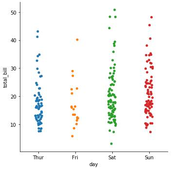
数据在x轴上按星期几分为4类，每类都有多笔账单金额，这些数据自动采用随机“抖动”以分散点的位置。如下轴级命令将产生类似的效果。
sns.stripplot(x="day", y="total_bill", data=tips, jitter=0.1)
参数jitter控制分散程度，值越大越分散。
第 12 页 · 注意，分类散点图用于展示某类的数据点分布，x是类别变量，1个x值对应多个y值。如要展示x和y的一对一函数关系应使用7.3
注意，分类散点图用于展示某类的数据点分布，x是类别变量，1个x值对应多个y值。如要展示x和y的一对一函数关系应使用7.3节介绍的relplot()命令。catplot命令还支持kind='swarm'型散点图，并支持col等多子图参数。如下命令中col='smoker'参数将数据分为吸烟(Yes)和不吸烟(No)两列子图，更便于分类观察。如将参数换成 row='smoker'则得到分行子图。
sns.catplot(x="day", y="tip", kind="swarm", col="smoker", data=tips) # swarm型散点图，分列多子图
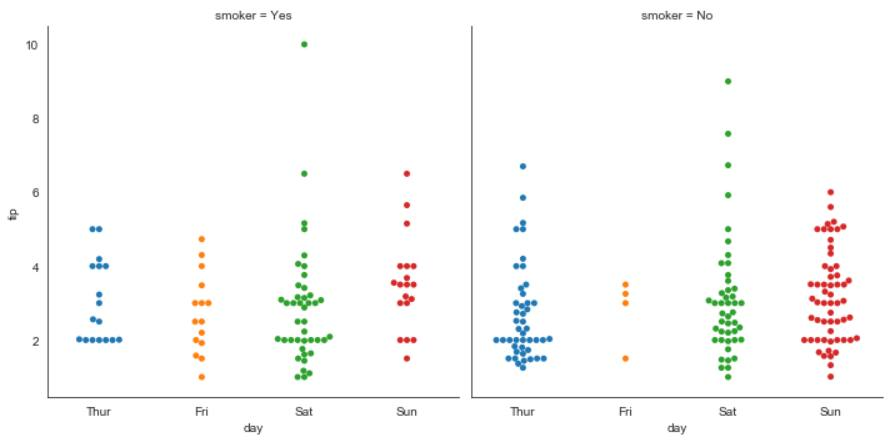
图中可见星期六/日的散点数明显比星期四/五多，小费金额也高一些。星期六有几笔小费金额最高。
二、分类散点图
第 13 页 · 上面命令绘图时，"smoker=Yes"子图排在前面。如果想将"smoker=No"子图排在前面，可加入col_orde
上面命令绘图时，"smoker=Yes"子图排在前面。如果想将"smoker=No"子图排在前面，可加入col_order参数指定分列时的子图顺序。图略，见代码文件。
sns.catplot(x="day", y="tip", kind='swarm', col='smoker', col_order=["No", "Yes"], data=tips) # 指定列序
下面命令中order=["No","Yes"]指定在x轴上"No"非吸烟类数据排在前面。
sns.catplot(x="smoker", y="tip", order=["No", "Yes"], data=tips) # order指定x轴数据顺序
g = sns.catplot(x="total_bill", y="day", kind="swarm", data=tips) # 横向散点图
print(type(g.ax)) # 输出信息 <class 'matplotlib.axes._axes.Axes''>
ax = g.ax # g.ax对应当前子图对象axes
ax.set_title('横向散点图示例', fontsize=16) # 设置title
ax.set_yticklabels(['星期四', '星期五', '星期六', '星期日']) # 设置y轴刻度标签
有时可将命令中的x/y参数互换，将类别列指定为y轴以绘制出横向散点图，尤其适用于类别名称较长或类别数较多的情况。
二、分类散点图
第 14 页 · catplot()这类figure-level图级函数不能直接设定图形大小，只能设定子图的高度height和宽高比asp
catplot()这类figure-level图级函数不能直接设定图形大小，只能设定子图的高度height和宽高比aspect，绘图时将根据子图数量自动设定图形大小。绘制后，各子图之间的间距还可用如下指令调整。
sns.catplot(x="day", y="tip", col='smoker', row='time', data=tips, height=2, aspect=0.8)
plt.subplots_adjust(wspace=0.5, hspace=0.3) # 调整子图间水平和垂直间距, 图略
上例中ax=ax参数指定stripplot()在已设定大小的ax上绘图,该参数仅适用轴级函数，对图级函数无效。
如要精确控制图形大小，可将plt和axes-level轴级函数配合，如下所示。
fig, ax = plt.subplots(figsize=(6, 4)) # 设定图形大小, 图略
sns.stripplot(x="day", y="tip", data=tips, ax=ax) # ax=ax，指定stripplot() 在此ax上绘图
另一种设置图形默认大小的方式是使用sns.set()命令，如下所示。设置后，plt函数和单独的轴级函数的图形尺寸以此设置为默认值。
sns.set(rc={"figure.figsize":(6, 4)}) # 设置图形默认大小, 影响axes-level级函数和plt函数
二、分类散点图
第 15 页 · catplot()支持两种箱线图，参数kind='box'绘制普通箱线图，调用boxplot()命令完成。参数kind=
catplot()支持两种箱线图，参数kind='box'绘制普通箱线图，调用boxplot()命令完成。参数kind='boxen'绘制增强箱线图，调用boxenplot()命令完成。
sns.catplot(x="day", y="tip", kind='box', data=tips, height=4, aspect=1.2, palette='Set1') # 左图, 箱线图
sns.catplot(x="day", y="tip", kind='boxen', data=tips, height=4, aspect=1.2) # 右图, 增强箱线图
三、分类箱线图和小提琴图
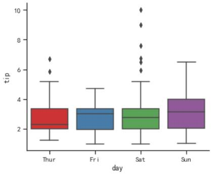
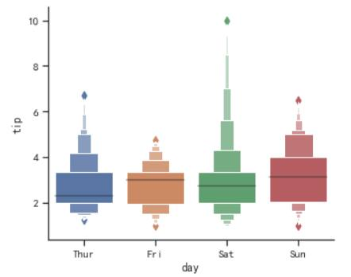
指令中x='day'将数据在x轴上按星期几分为4类。普通箱线图标注25%，50%，75%三个分位点，增强型箱线图在两端扩展，标注1/8、1/16、1/32等更多分位点，适合大数据集。
第 16 页 · 设置kind='violin'参数可将箱线图和核概率密度图结合起来，构成小提琴图。小提琴图内部的细的黑色柱体是原来的箱体
设置kind='violin'参数可将箱线图和核概率密度图结合起来，构成小提琴图。小提琴图内部的细的黑色柱体是原来的箱体，中间的白点是中位数，外侧的曲线是概率密度曲线，两侧曲线是对称的。整个图形比较宽的区域表示此区域数据较密集，较窄的区域表示数据较稀疏。
sns.catplot(x="day", y="tip", kind='violin', hue='smoker', data=tips, height=4, aspect=1.2) # 小提琴图
三、分类箱线图和小提琴图
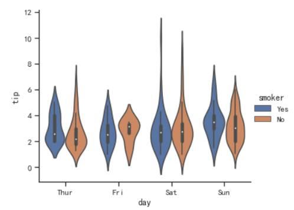
命令中如添加split=True参数，则将每个小提琴分为两半，左侧显示吸烟者核密度曲线，右侧显示非吸烟者核密度曲线，以更好地对比两者的密度分布。如上面右图所示。
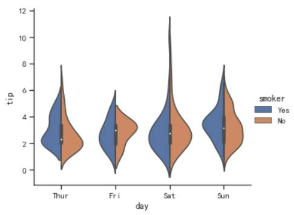